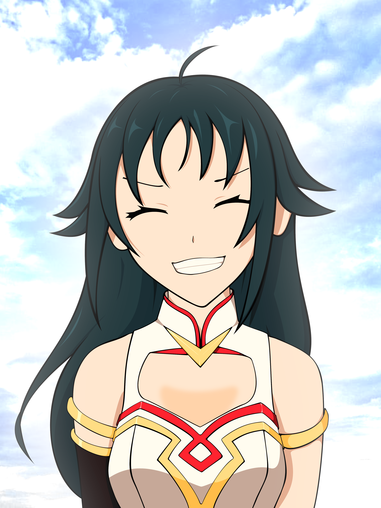

ABOUT
 曲を作るときは暮狛、英語表記ならKureComa、BMS差分を作るときはctc、
そして人からは「ちとつ」という最初に使っていた名義で呼ばれる事が多い人間です。
たまにチトセと間違って認識されますがちとつという名義はうちのうさぎのチトセにあやかって二番目だからチトセツー、略してちとつだったのであながち当たらずとも遠からずだったり。
ctcは自分がチトセの綴りをchitoceと描いていたのでそれの母音抜き表記です、例のアレより前から使ってたので許してください。
そしてBMS界隈に既にチトセさんとChitoseさんとmtcさんが存在して紛らわしかったのでBMSを作るにあたって暮狛という名義を増やしました。
BMSというか音ゲー全般の変な譜面を特に愛好しています、
クソという言葉はネガティブな意味が強めで好まないので癖というワードを使いがち。
それ以外では犬とゲームと音楽と料理と数学と現代アートが好きです。
それらについてのいい感じの情報を教えられると簡単に好感度が上がります。
ツイッターは
@cure_to_coma、blueskyは
curecomaまで。
Discordも同じくcure_to_comaでアカウントを持っているのでそちらからどうぞ。
YouTubeは
こちら、基本的にはBMS動画と差分動画を上げていく予定です。
SoundCloudは
こちらから、もっと色々アップしなきゃですね。
ちなみに画像は自画像を置く予定の場所に仮置きしている
paraphさんに頂いた感謝してそうな南条光です、上手いよね。